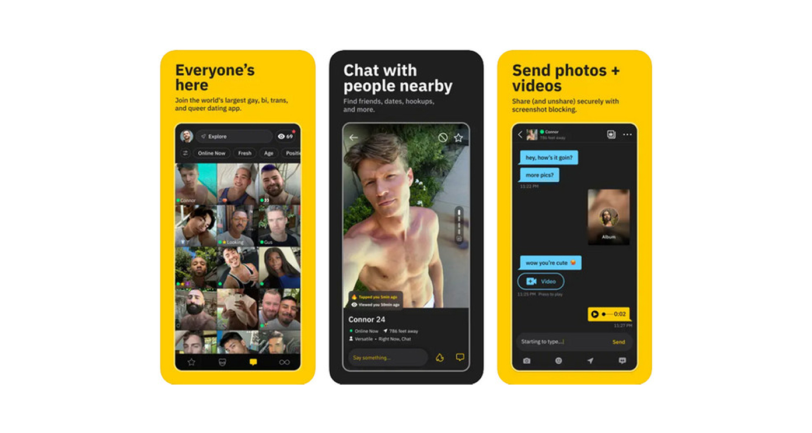
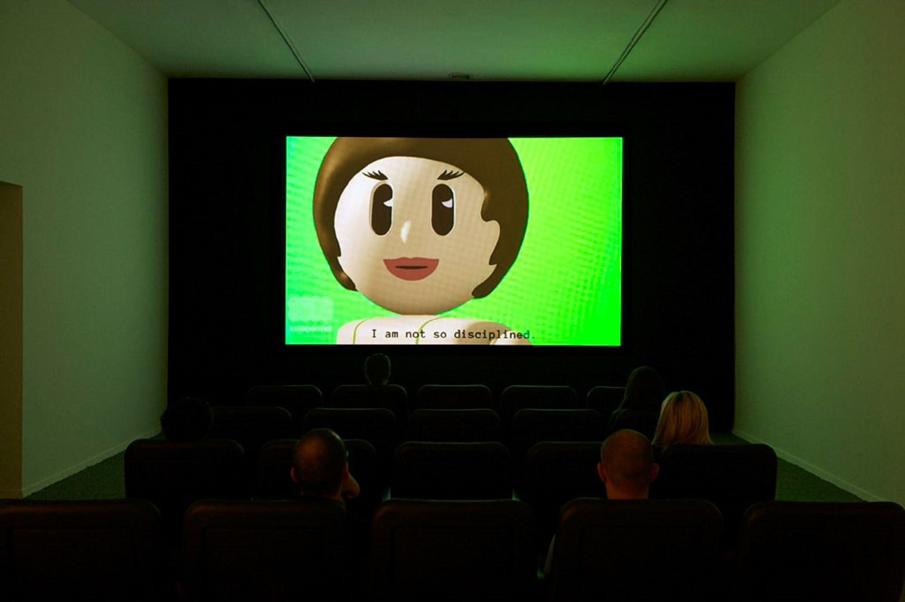
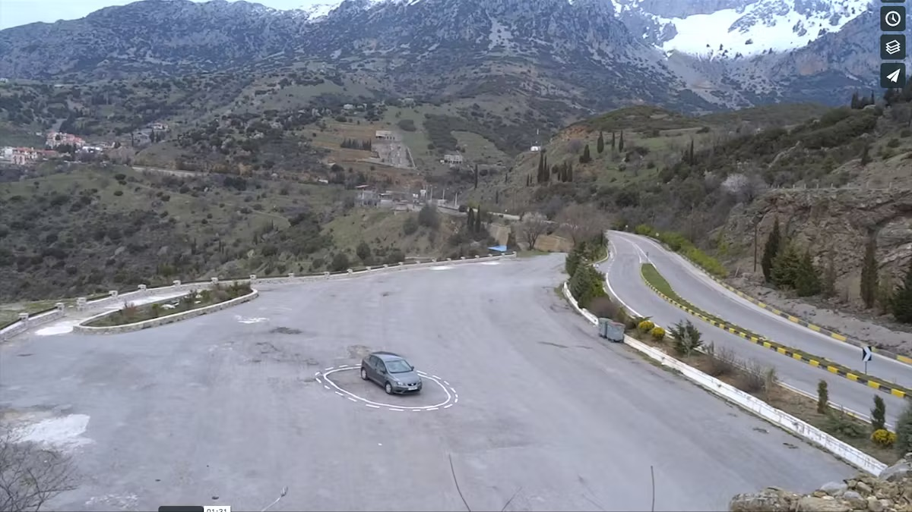
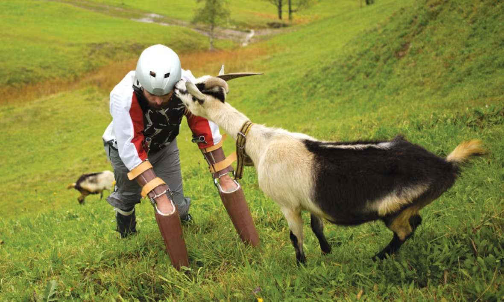
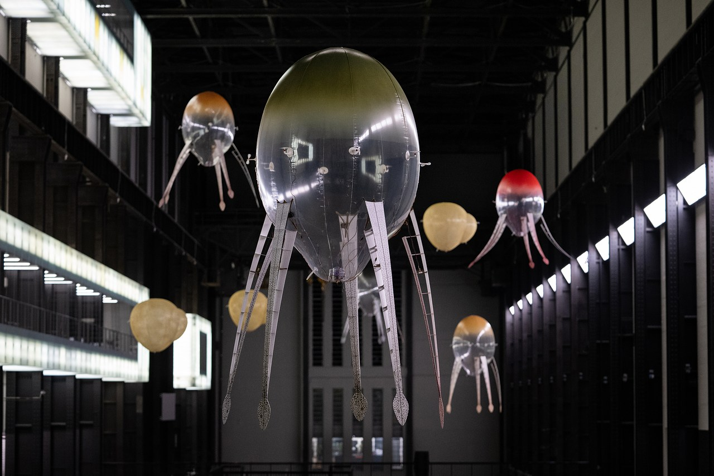
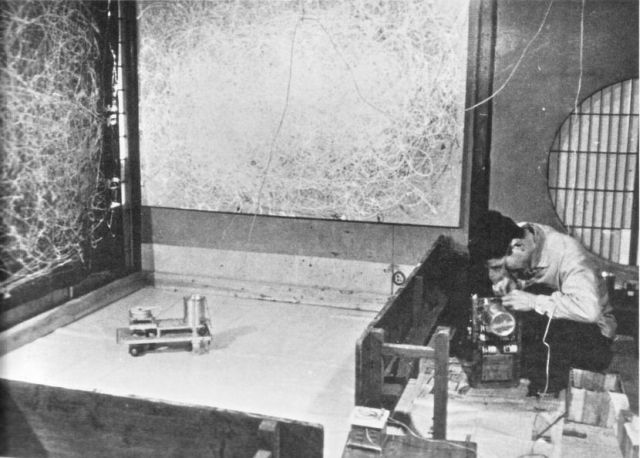
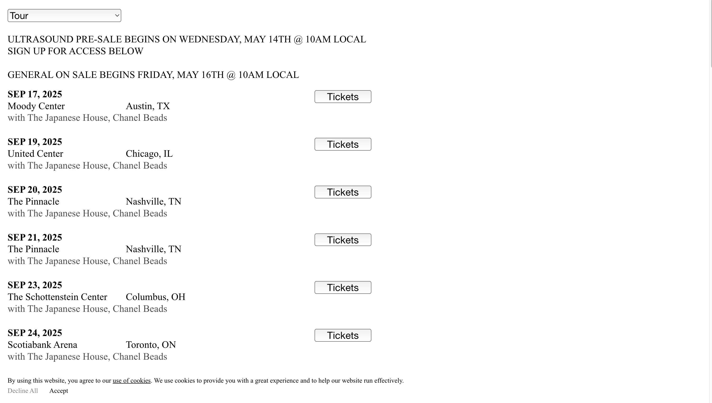
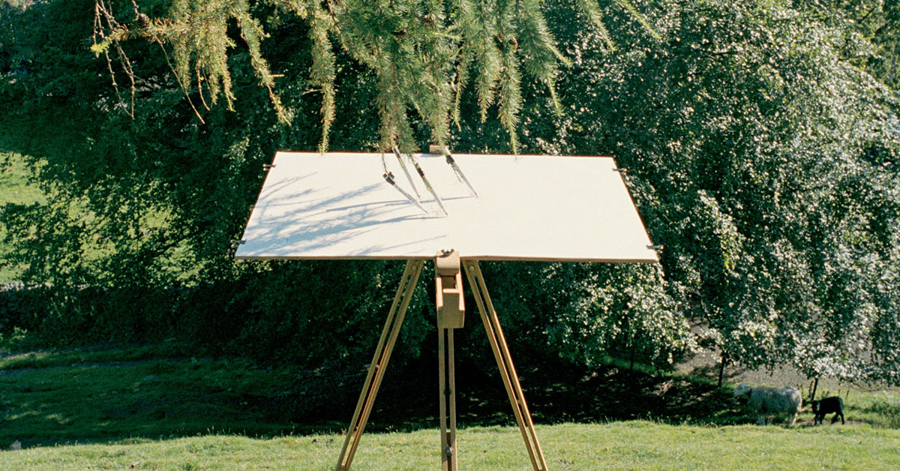
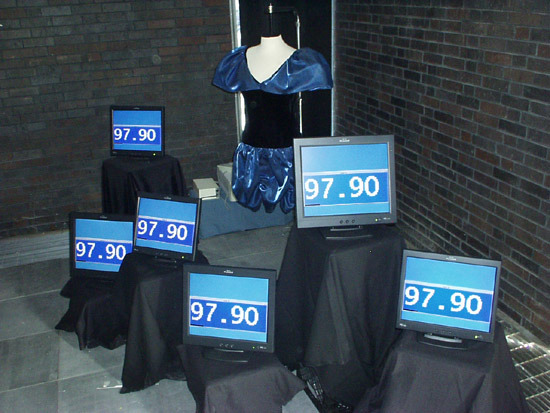
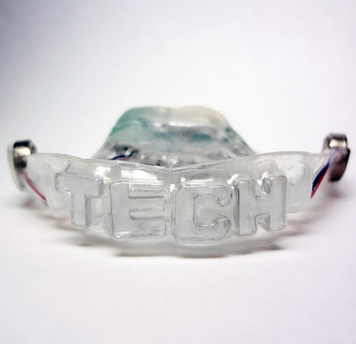

Grindr
Whatsup babe?💦
Grindr is a location-based hookup app used mostly by gay men, designed around instant visibility, desire, and chat, which is what I’ve based the interface of this site on.
Looking? 👀
I’m looking for DEPTH. Not just in who we talk to, but in how we present ourselves online. Using Grindr’s UI here is a way to play with the line between honesty and performance, how we present ourselves when we know we're being watched. Framing this as a research journal lets me lean into that tension, where reflection and self-earnestness are fundamental.

Frances Stark - My Best Thing
What is this🔥?
Frances Stark's My Best Thing is a feature-length animation that transforms her real-life Chatroulette conversations into a playful yet introspective exploration of intimacy, creativity, and digital communication. Using simplistic avatars and robotic voices, the film delves into themes of vulnerability, miscommunication, and the unexpected depth found in online interactions.
DTF👿?
How about DTR? Down to REFLECT? I was inspired by Stark’s work to highlight the humour, vulnerability, and complexity inherent in contemporary online interactions, especially when in supposedly private sexual settings.

James Bridle – Autonomous Trap 001
Wyd aha?😜
Nothing… I literally feel like a self-driving car trapped in a salt circle. Its sensors read it as a boundary so it stops. The machine isn’t broken, just obedient. The work exposes how automation relies on strict rules, with no room for ambiguity or context.
Whos driving baby 👀💅?
Exactly… no one. It reframes physical computing as a site of constraint, not just interaction. I’m interested in how this reveals the limits of programmed logic, and how small inputs can quietly interrupt supposedly intelligent systems.

Thomas Thwaites – GoatMan
HOTTTT. Is your body all natty? 😳
No sorry. GoatMan is a prosthetic exoskeleton project by Thomas Thwaites, built not to enhance, but to escape. He mimics goat physiology to live among them, resisting productivity, language, and even upright posture- a speculative interface for unbecoming human.
You don’t have much experience do you? 🫦
Exactly. It’s a refusal of control. In the context of physical computing, it flips the script; wearables here don’t optimise but disrupt. That idea of tech as withdrawal, not amplification, makes me think about interface design as a space for slowness, absurdity, or even failure.

Anicka Yi – In Love With The World
You are drop-dead gorgeous.😘
Drop-dead? Nah im literally the opposite, flying high and slaying. Yi’s floating AI creatures, or “aerobes,” drift through space responding to heat, movement, and proximity, not commands. Their logic decentrest control, but rather entanglement. It’s a version of physical computing that centres the body, environment, and nonhuman agency.
Damn thats deep… What a trip…
Thank you. Yi reframes intelligence as physical, relational, and emergent. It makes me wonder how interaction can be atmospheric rather than responsive, and what it means to build systems that don’t just react but behave.

Remote controlled Painting Machine – Akira Kanayama
Dom?😈 R u into control?
Not really… In 1957, Kanayama strapped a pen to a toy car and let it roam across a canvas. No brushstroke or hand, but just a motorised drift. The work repositions authorship: if the body isn’t doing the mark-making, what is? It’s mechanical, not expressive, but still intimate in its absurdity.
Ok but r u a top?
Idk about top, but I definitely TOPPLE. I love how this flips the idea of control in physical computing, no sensors, no smart logic, just movement without oversight. It suggests automation doesn’t have to optimise, but it can wander, trace, play.

Lorde Website
Strip that down for me?🥵
Lorde’s new site strips everything back to have no styling, no polish, just default browser UI. It mirrors the themes of her album VIRGIN and Ultrasound tour: exposure, rawness, scanning the body and spirit from the inside out. I like the use of the browser’s bare bones as metaphor.
I have no time for time-wasters. Bye.
Lorde is the same- refusing aesthetic in favour of elemental form, conveying an idea through the most fundamental means possible.

Tim Knowles – Tree Drawings
u good with ur hands? 🍆
Not mine, but the tree’s. Knowles attaches pens to branches, letting the wind, weather, and tree movement draw on paper. It’s a kind of delegation, where the tool becomes the subject. What I love is how this bypasses human intent: the drawing is an index of movement, but it’s also a collaboration with the nonhuman.
ok but like… what r u doing with that?
It makes me think about control in interactive systems. Here, the tree “performs” through a simple mechanical interface. That resonates with physical computing, especially the way small setups can record or translate motion, without needing to do too much. It reminds me that interaction doesn’t always mean intention. Why happens when we just let it drift?

Nancy Paterson – Stock Market Skirt
I wanna rip that dress off you🫦
Go ahead… but the market might beat you to it. Paterson’s Stock Market Skirt literally lifts or drops depending on real-time trading data. It’s a critique of how women’s bodies are exposed, measured, and made reactive under economic conditions we rarely see but constantly feel.
ok but like… what r u doing with that?
Physical computing here isn’t just input/output. The skirt becomes an interface, where code meets culture. It makes me think about feedback systems in design: what it means when the body becomes the display.

Aisen Caro Chacin – Play-A-Grill
👅?
Play-A-Grill is a hacked MP3 player embedded into a dental retainer. When worn, it transmits sound through bone conduction via your teeth, so music vibrates straight through your skull.
Mmm I wanna feel it deep in my jaw…
You would. This work reframes interactivity as embodied and invasive not through touchscreens, but through teeth. It blurs boundaries between device and body, consumption and interface, asking what it means to listen when the tech is literally inside you. A speculative prosthetic for pleasure, control, or maybe both?
👀